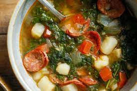

Kale Soup

Ingredients
- 1/4 cup olive oil
- 1 large sweet onion, diced
- 2 tablespoons chopped garlic
- 1 pound linguica
- 1 pound kale, sliced
- 4 cups water
- 4 cups chicken stock
- 2 pounds russet potatoes, chopped
- 1 tablespoon salt
- Pepper to taste
Steps
- In a large saucepan over medium high heat, saute
onions in oil until translucent.
- Add garlic and continue to saute until fragrant.
- Add linguica and saute until it begins to render
fat.
- Stir in chopped kale and cook until wilted.
- Add remaining ingredients.
- Bring to a boil, then simmer for 30 to 40 minutes,
until potatoes are tender.